Our Grandchildren
The intent of this page is to provide a time sequence of photos of our grandchildren. Since Rowan and Austin were born within three days of each other, we can see them both developing together. Juniper then arrives when they are both three and a half.
- Rowan May James; born Tuesday 8th May 2012 in Twickenham (actually Teddington Memorial Hospital)
- Austin Miles Hurr; born Friday 11th May 2012 in Binfield (actually Frimley Park Hospital)
- Juniper Autumn Hurr; born Wednesday 23rd September 2015 (just before midnight) in Davis, California (actually Sutter Davis Hospital)
Click on any of the images to see a larger version.

Rowan, one day old.
Austin; relief!
Home
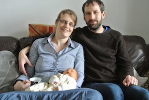 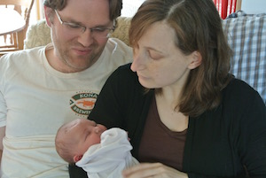Proud Grandparents (May and June 2012)
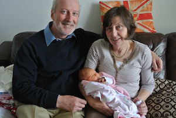 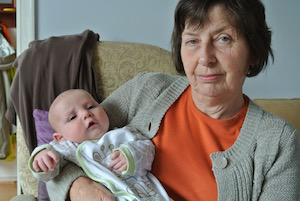May and August 2012
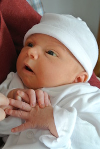 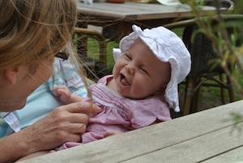 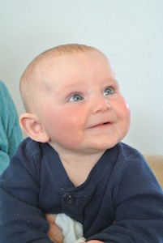December 2012 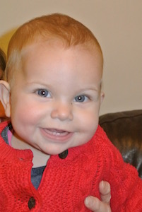 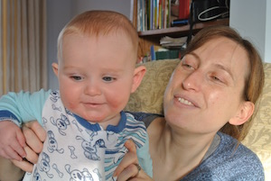 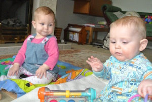
April, May and July 2013 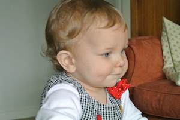 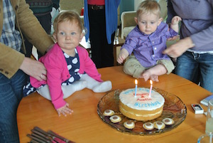 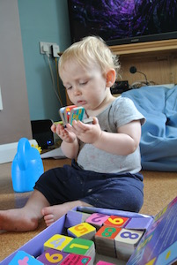
August and September 2013 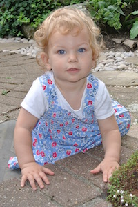 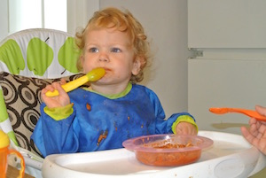 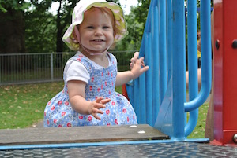 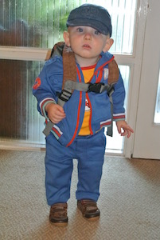
Christmas 2013 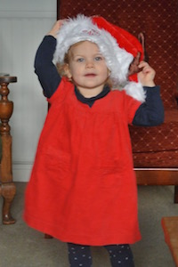 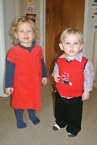 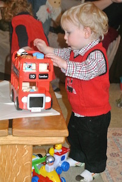
2nd Birthday 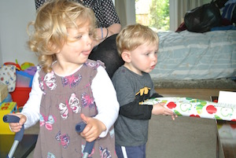 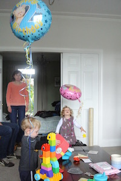 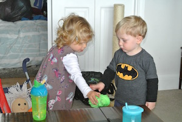
September 2014. By this time Austin had moved to California and Rowan was in The Netherlands. 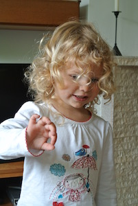 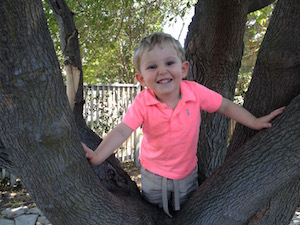
October 2014. 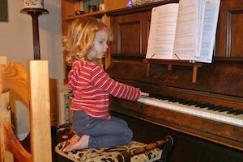 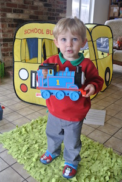
April 2015 in Rotterdam, June 2015 in Cornwall and October 2015 in Davis
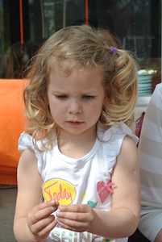
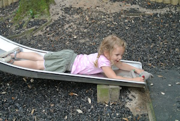
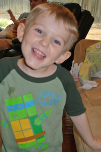
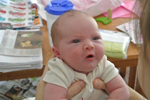

October 2015 in Berkenwoude and November 2015 in Davis
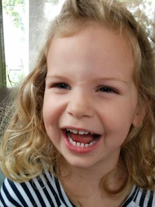

© David James 2015 Last updated: 24th November 2015